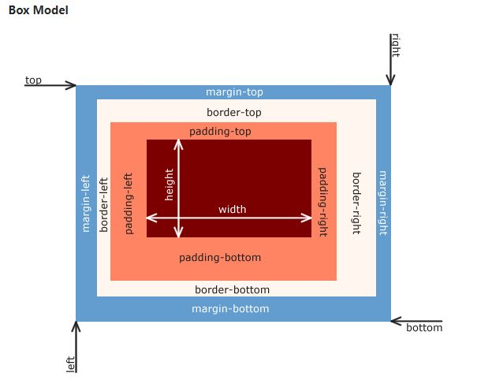
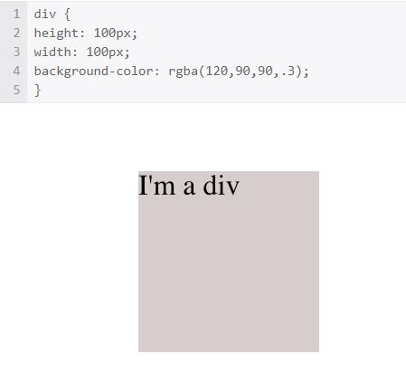
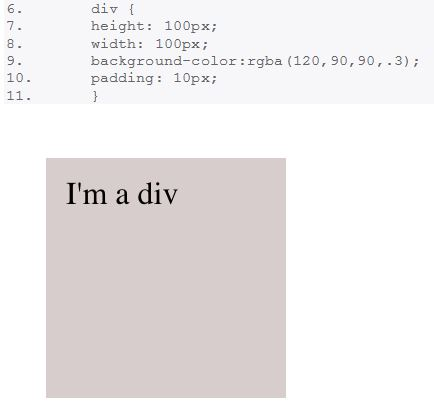
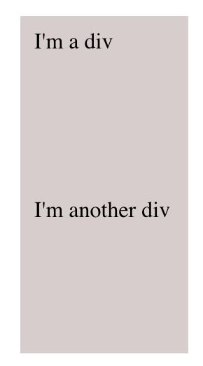
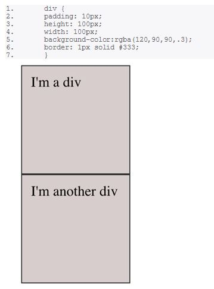
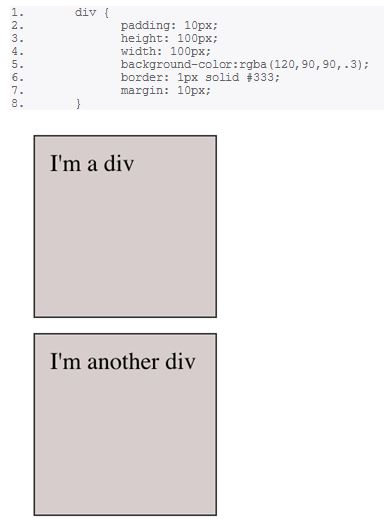

‘Border’ is the strip that goes around your content. ‘Padding’ is the space between the content and the border. ‘Margin’ is the space outside the border. So, Content+Padding+Border+Margin=Total Space

Let’s take an example for our everyday life. Imagine that you have a set of framed and matted photographs hanging on a wall. Each photo is surrounded by a mat that puts space between the photo and the frame. That space would be the padding. The frame encloses the mat and the image. That would be the border. Each picture has a set amount of space around the outside. That is the margin. If two pictures are hanging side by side with four inches between them, then we might say that they each have a two inch margin. The margin is the distance between an element and something else. We have to remember that the width is assigned to the content of the element and does not include the padding or border. If you want to know how much space the element would take up you need to remember to add the width of the padding and border. An element that is 100px wide with a 1px border and 10px of padding takes up 122px of horizontal space.
Let’s delve into coding now. Here is a div without padding: It is exactly 100px x 100px

Here is a div with 10px of padding on all four sides Notice that the text no longer sits at the left-most edge.

Now here’s two divs How can I tell my divs apart?

Let’s add some border

Now we’re learning something! Padding is the inside of the box. It manages the spacing between whatever’s inside, all the way to the border. So who’s in charge on the other side of the border?
Let’s set margin: 10px and find out:

Margin is the spacing on the outside of the element!
But how do we decide when to use margin or padding. Let's assume that you have a div with proportions 200px x 200px with black background color. Differences: Margin: 10px; Your div will have proportions 200px x 200px with background color black and it will have 10px margin from all sides (10px of free space). Padding: 10px; Your div will have proportions 200px x 200px plus 10px from padding with background color black, so it will actually look like 220px x 220px. So basically I think that you use: • Margin if you want to position some div. I might use margin to create a layout for website. • Padding if you want a space around your div/button/table/image for better displaying (ux).